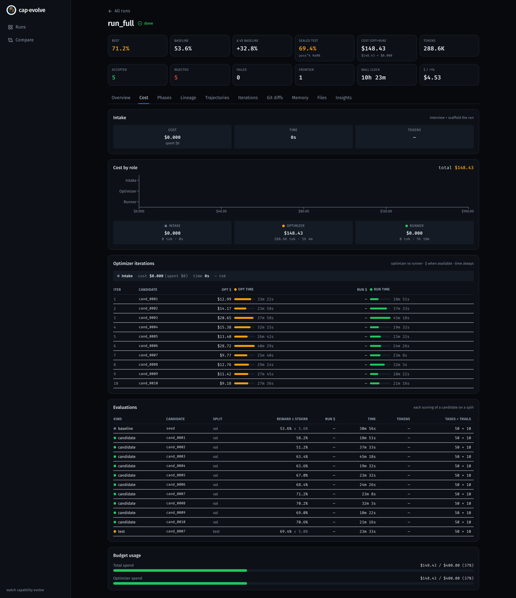

Run it end-to-end
Take a real benchmark from a single prompt to an honest, sealed result — every claim backed by a committed artifact you can open offline. The worked example is τ²-bench airline: onboarded as a brand-new benchmark, wired to IBM RITS, passed through the hard gate, then optimized behind a paired significance gate with a live dashboard.
The headline
Optimizing the airline policy and tools jointly over 10 hill-climb
iterations moved the mean τ² task reward from the seed capability to the best
candidate (cand_0007) on all 50 tasks × 10 trials:
This committed run is no-holdout (train = val = test = all 50
tasks), pinned via split_ids.json, so val is the fit
metric and the sealed-test number is reported as a fit metric — the engine
logs a splits_warning and the report flags it. For a held-out result,
pin a 30/10/10 split. The gain still accretes only behind the paired significance
gate, one git commit at a time.
Prerequisites
- Python 3.10+ and git.
-
RITS credentials in a repo-root
.env—RITS_API_KEYandRITS_API_URL. RITS is the runner and user simulator (openai/gpt-oss-120b); it is internal/free, so the runner cost is honestly$0. -
An optimizer: a logged-in Claude Code session (or
ANTHROPIC_API_KEY) forclaude-code @ claude-opus-4-6.
Everything else — cap-evolve, tau2-bench, the dashboard server — is installed for you
by setup.sh. Nothing is expected to pre-exist except those credentials.
The run, step by step
Two commands do the whole thing. They are the executable transcript of pasting the intake prompt to a coding agent and saying “follow RUN.md.”
Setup — onboard the benchmark and pass the hard gate
bash examples/tau2_airline/setup.shThe intake / implement-and-check transcript. In order it:
- creates
.venvandpip install -e ./core(thecap-evolveCLI), plus the optional dashboard server; - clones tau2-bench from
github.com/sierra-research/tau2-bench,pip install -es it, and records the resolved SHA torun_full/TAU2_COMMIT.txt; - scaffolds
.capevolve/project, then wires the authored integration — the adapter, the RITS shim, the editable seed capability (policy/+tools/), andcapevolve.yaml; - runs the HARD GATE
cap-evolve check .capevolve/project, which verifies the credentials and adapter contract (including thatscore()is deterministic).
cap-evolve check must print {"ok": true}. The run refuses to proceed otherwise.
Estimate — preview the cost (spends nothing)
cap-evolve estimate --spec .capevolve/project/capevolve.yaml --project .capevolve/project
Prints the call counts (val × trials × iterations runner calls,
iterations optimizer calls) and a calibrated $ range —
a preview that spends nothing before you commit to the full run.
Run — optimize → gate → seal → report
bash examples/tau2_airline/run.shWhich runs, with the live dashboard:
cap-evolve run --spec .capevolve/project/capevolve.yaml \
--project .capevolve/project --run-ts full --dashboard auto
The config (from capevolve.yaml): capabilities
[system-prompt, tools], algorithm hill-climb
(--focus all), 10 iterations · 50 tasks · 10 trials,
and the paired significance gate (gate_k_se 0.2,
val-only). Each iteration diagnoses val traces into failure clusters, the optimizer
edits policy and tools under a --max-budget-usd 40 per-iteration
cap, all 10 trials are re-evaluated in one batched pass, the gate accepts or rejects,
and the step is committed to git.
This run takes hours. Re-run the exact command with --resume appended —
it reopens run_full, skips the already-scored baseline, and continues
from the last accepted iteration, so you don't repay for work already done.
Inspect — the process, not just the number
Every iteration is a git commit. Open the whole story offline:
RD=.capevolve/run_full
git -C "$RD" log --oneline # one commit per iteration (the whole optimization)
cat "$RD/report.md" # baseline val → best val → sealed test (+ pass^k)
open "$RD/dashboard.html" # KPIs, cumulative-best stair, heatmap, lineage, cost
cat "$RD/rejected.jsonl" # what the honest gate rejected = optimizer memory
rejected.jsonl is not noise — the gate's rejections become the
optimizer's memory: each rejected iteration's RESULT line names the
exact tasks it broke, and the next iteration drops just those edits.
Open the committed dashboard with no backend
The full interactive dashboard — all 10 iterations — is checked in as a static export. No Node, no backend, no re-run needed to see the result:
cd examples/tau2_airline/run_full/ui && python3 -m http.server 8000
# then open http://localhost:8000Serve it locally like this, or host it on GitHub Pages / any static host.


JOURNAL.md where each iteration's intent meets the
framework's objective RESULT line.

$0; the ~$148 spend is the
Claude optimizer, capped at $40/iteration.
What actually changed
Five of the ten iterations cleared the gate. The throughline: argument-level
feedback from failing rollouts becomes executable in-code guards
inside the existing tool bodies — prose reserved for genuine knowledge gaps. That is why
tools.py grew 593 → 832 lines (and the policy 166 → 233); most of the lift is
real code, not prompt wording.
| Iter | Δ val | What the optimizer shipped |
|---|---|---|
| 1 | +0.046 | In-body tool guards: already-cancelled / already-flown on cancel_reservation, basic-economy + origin-preservation on update_reservation_flights, no-reduction on baggages, enriched get_user_details. |
| 3 | +0.052 | Added the get_all_reservation_details enumeration loop tool that fixed the “incomplete enumeration” cluster; re-applied only the safe edits from the rejected iteration 2. |
| 5 | +0.036 | Eligibility / state guards that broke nothing (fixed tasks 0, 13, 41, 49). |
| 6 | +0.014 | The ≤1 travel-certificate count guard in book_reservation and related payment validation. |
| 7 | +0.028 | The best step: a max_charge budget guard on update_reservation_flights, plus the output contract to state the exact figure from payment_history instead of hand-computing it. |
Five concrete before→after edits — each verified in the trajectories (what the agent did on a failing rollout vs the passing one) — are written up in docs/OPTIMIZATION_EXAMPLES.md: the certificate guard, the budget-cap validation, the enumeration loop tool, the “don't ask for data you can look up” knowledge rule, and the exact-figure output contract.